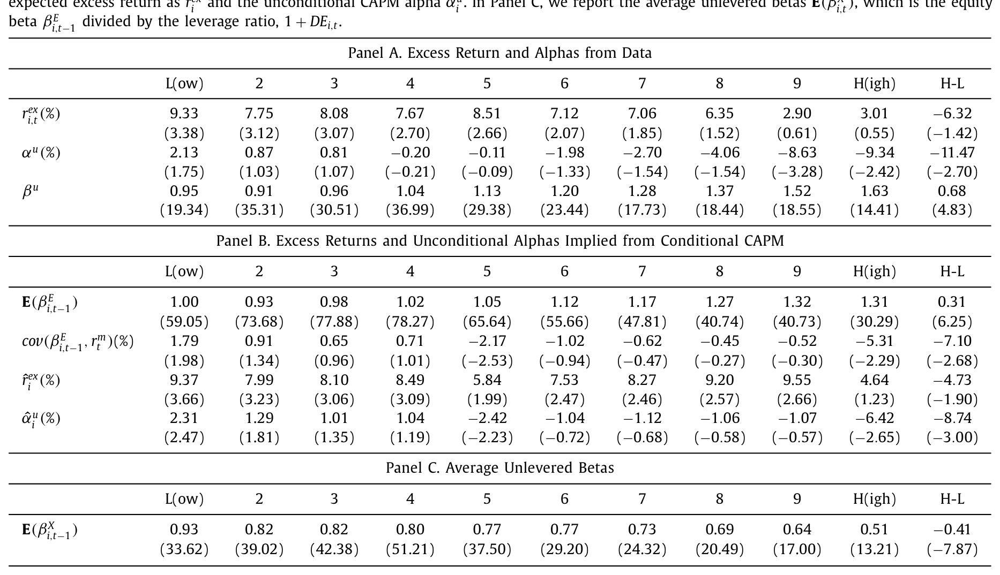
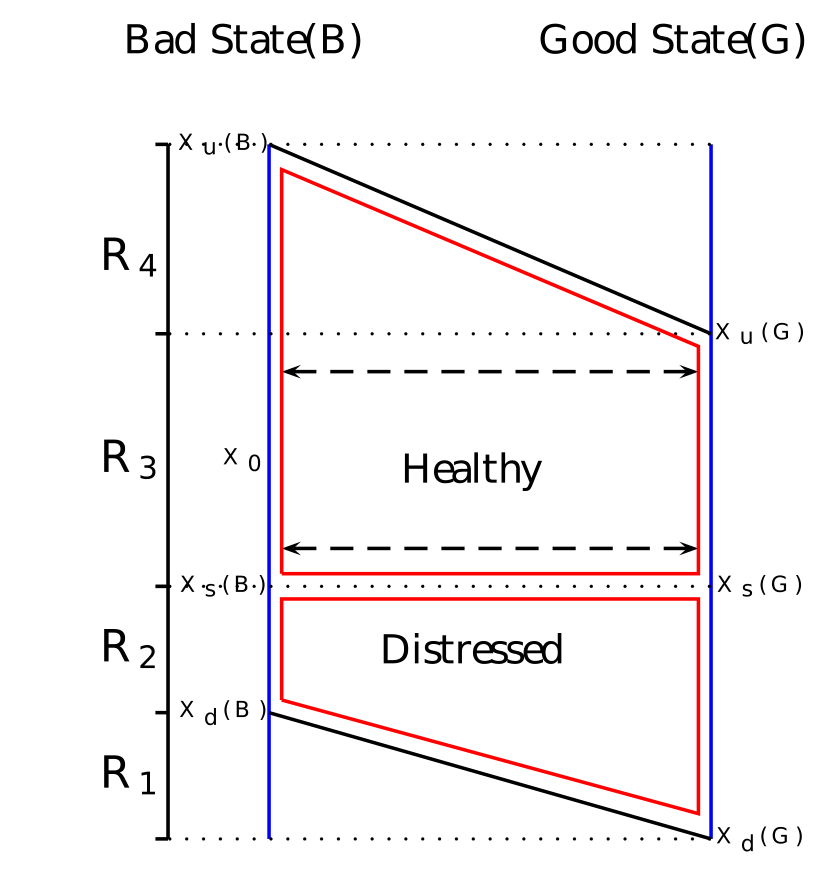
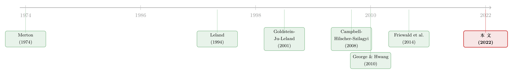

高 beta、低收益：困境股票里那根会「看天」的杠杆
本文读的是 Chen, Hackbarth & Strebulaev (2022, JFE)：濒临破产的公司，股票 beta 高得吓人，预期收益却低到为负、CAPM alpha 一路滑到 -9.34%。作者把这件怪事追到一个被忽略的细节——困境企业的「债务/股权比」和杠杆 beta 会和市场风险溢价反向波动；再用一个内生举债、内生陷入困境的动态信用风险模型，把「违约概率越高、收益越低」和「困境风险溢价越高、收益越高」这两个看似矛盾的谜题，缝成了同一块布。
1 一个让人别扭的事实
先抛一个让所有学过 CAPM 的人都会皱眉的事实。
把美股按「破产/退市概率」（failure probability）从低到高分成十组，看看最濒死的那一组挣了多少钱。直觉上，越接近破产、风险越大，投资者要价应该越高——这一组的收益理应傲视群雄。可数据偏偏反着来：最健康那组的年化超额收益是 9.33%，最濒死那组只有 2.90%，多空价差 -6.32%；而 CAPM alpha 更夸张，从健康组的 +2.13% 一路跌到困境组的 -9.34%，价差 -11.47%（t 值 -2.70）。
这就是 Campbell, Hilscher & Szilagyi (2008) 记下的 困境风险之谜（distress risk puzzle）：高违约概率的公司，赚的是低收益、甚至负 alpha。
更别扭的还在后头。如果你以为这些濒死公司是因为 beta 太低、所以系统性风险小、所以收益低——那就错了。数据里它们的市场 beta 不但不低，反而高：从健康组的 0.95 升到困境组的 1.63（如表 2 所示）。高 beta 配负 alpha，这在 CAPM 的世界里几乎是个悖论：beta 高意味着该多赚，alpha 负意味着实际少赚，两者顶在一起，模型怎么圆？

Table 2
接着，一个自然的问题是：到底是谁在「同时」制造高 beta 和负 alpha？
2 把 beta 拆成「水平」和「时机」两块
要回答这个问题，得先承认一件事：CAPM 里的 beta 不是一个常数，它会随经济周期上上下下。一旦 beta 会动，无条件回归算出来的 alpha 就被「污染」了——污染的来源，恰恰是 beta 和市场风险溢价之间的协方差。
这正是 Lewellen & Nagel (2006) 早就讲清的逻辑（关于条件 beta 怎样系统性地扭曲无条件 alpha，可参见《时变的 beta，被低估了二十年的风险》）。把一只股票的隐含预期超额收益做一个分解：
$$ \hat{r}^{ex}_i = E\big[\beta^E_{i,t-1}\, r^m_t\big] = E\big[\beta^E_{i,t-1}\big]\,E\big[r^m_t\big] + \mathrm{cov}\big(\beta^E_{i,t-1},\, r^m_t\big) $$
右边第一项是教科书味道的部分：无条件 beta 乘以平均市场风险溢价，永远为正；第二项才是文章的主角——杠杆 beta（levered equity beta）和市场风险溢价的协方差。如果这个协方差是负的，预期收益就被往下拽。
把这一项摆到聚光灯下，论文最核心的方程其实就是下面这一行：
而无条件 CAPM 的 alpha，可以进一步近似写成：
$$ \hat{\alpha}^u_i \approx \mathrm{cov}\big(\beta^E_{i,t-1},\, r^m_t\big) - \frac{E[r^m_t]}{\big(E[\sigma^m_t]\big)^2}\,\mathrm{cov}\big(\beta^E_{i,t-1},\, (\sigma^m_t)^2\big) $$
第一项又是那个协方差。结论于是很干脆：只要困境企业的杠杆 beta 和市场风险溢价负相关，它就能在保持高 beta 的同时，挣到负的 alpha。 悖论不再是悖论——高 beta 描述的是「水平」，负 alpha 来自「时机」，两者本就可以并存。
那么数据支持吗？作者用两套方法验证。不带工具变量的 Lewellen-Nagel 方法显示，这个负协方差能解释 28% 到 87% 的无条件 CAPM alpha；带工具变量的 Choi (2013) 方法则把条件 CAPM alpha 压低了 27% 到 50%。在表 2 的 Panel B 里，最困境组的 cov(βE, rm) 是 -5.31%（t 值 -2.29），多空价差 -7.10%（t 值 -2.68）——负协方差，实打实地集中在濒死的那一端。
3 真正关键的一步：杠杆为什么会「看天吃饭」
但真正关键的一步，不在于「测出」这个负协方差，而在于解释它从哪儿来。一个负协方差不会从天上掉下来，它一定有微观结构上的根。
这里要把股票 beta 拆成两层：去掉杠杆的资产 beta（unlevered beta, βX），和加上杠杆后的股权 beta（levered beta, βE）。表 2 的 Panel C 给了一个反直觉的对照：资产 beta 是随困境程度下降的——从健康组的 0.93 一路降到困境组的 0.51（多空 -0.41，t 值 -7.87）。也就是说，困境公司的「生意本身」其实并不更暴露于系统性风险；真正把股权 beta 顶到 1.63 的，是杠杆。
于是问题收窄成一句话：困境企业的杠杆，为什么会和市场风险溢价反向走？
论文给的直觉是两层。第一层，发债是顺周期的。 公司一般在扩张期多发债、衰退期少发债（Bhamra et al., 2010a），所以在发债时点附近，债务比率是顺周期的——经济好、风险溢价低时杠杆反而高。第二层，也是更要命的一层：因为有交易成本（Strebulaev, 2007），公司大多数时候不会马上调整债务。当市场风险溢价在坏状态里抬升时，对一家已经濒死的公司来说，债务价值的下跌幅度会大于股权价值的下跌。
为什么不对称？因为有限责任。坏状态来临、风险溢价和困境成本同时上升时，资产价值缩水的这口锅，股东被有限责任护着、只承担有限的一份，而债权人要在破产时接管资产、扛下大头的损失。结果是债值跌得比股值狠，债务/股权比因此下降，杠杆 beta 随之下降。坏状态恰恰是市场风险溢价高的时候——杠杆 beta 在高溢价时变低，这不就是一个负协方差吗？
把这条链子接起来：困境 → 坏状态里债值塌得比股值快 → 杠杆 beta 反向于风险溢价 → 负协方差 → 负 alpha。它和小盘、不盈利公司「顺周期杠杆」的经验事实（Halling et al., 2016）也对得上，因为小公司、不盈利公司，本就是困境公司的代名词。
4 内生的困境：把两个谜题缝成一个
到这里，文章其实已经能解释 Campbell et al. (2008) 了。但作者的野心更大一点——他们要顺手把另一个看似矛盾的发现也收进来。
Friewald, Wagner & Zechner (2014) 发现的是反方向的关系：困境风险溢价（distress risk premium）越高的公司，股票收益越高——这是个正向关系，听起来才符合「风险有价」的常识。可 Campbell 那边明明是「困境越深、收益越低」的负向关系。同一批困境公司，怎么会同时满足一正一负两条规律？
于是反转出现：作者论证，「违约概率」和「困境风险溢价」这两个排序变量，事后是负相关的。 关键钥匙叫内生的困境状态（endogenous distress）。
这是本文相对前人最硬的一块贡献。在过去的 Leland 类模型里，困境的门槛是外生给定的（比如 Elkamhi, Ericsson & Parsons, 2012 第一个在 Leland 框架里显式研究财务困境，但把门槛取作外生，再校准到评级下调前后的特征）。而这篇文章里，困境门槛是内生的——沿用 Andrade & Kaplan (1998) 的定义，当现金流跌破合约利息时即为「困境」；而票息高低、举债多少，本身又是公司在周期里内生选出来的。债是内生的，所以困境也是内生的。
这一步打开了一个新机制：对总体困境风险（现金流 beta）暴露低的公司，会事前选择更高的杠杆——因为它们觉得自己不太怕系统性冲击，敢借。可一旦一个大的市场级冲击真的砸下来，正是这些借得最猛的公司更容易跌进困境。换句话说，困境风险溢价低的公司，反而更可能陷入困境、因此挣低收益——这恰好就是 Friewald et al. (2014) 的图景。两个谜题，在「内生举债 → 内生困境」这条线上合流了。
作者用「风险中性违约概率」与「真实违约概率」的对数差，作为困境风险溢价的代理变量，在模拟数据里照搬标准实证流程做组合，验证了：困境风险溢价越低的公司，杠杆越高、预期与实现违约概率都越高、收益越低、alpha 越负。
5 模型：两个状态、一根内生的门槛
值得专门说说模型的骨架，因为正是它把上面这些直觉变成可量化的结论。
这是一个带宏观状态切换的动态资本结构 / 信用风险模型（沿 Goldstein, Ju & Leland, 2001 与 Strebulaev, 2007 一脉）。经济在「好状态（G）」和「坏状态（B）」之间切换，两个状态的现金流增长率、波动率，以及——最要紧的——市场风险溢价都不同。市场风险溢价 MRP 由一组预测变量驱动，作者沿 Welch & Goyal (2008) 拟合一条预测回归：
$$ r^m_t = c_0 + c_1\, DY_{t-1} + c_2\, TB_{t-1} + c_3\, DS_{t-1} + c_4\, TS_{t-1} + e_t = MRP_{t-1} + e_t $$
其中 DY 是股息率、TB 是短债利率、DS 是违约价差、TS 是期限价差。在月度频率上，只有 DY 和 TB 显著（这与 Choi, 2013 一致）；季度频率上 DS、TS 变得边际显著（如表 1）。这条溢价的状态依赖，是整个机制的「天气」。
公司在每个状态下，面对一个权衡：举债能省税，但会推高陷入困境与破产的概率。由于调整债务有固定交易成本，公司只在现金流触及某个上界（再融资、加杠杆）或下界（违约清算）时才动手——中间区域里债务存量纹丝不动。这正是第 3 节那个「不对称分担」起作用的前提：因为大多数时候债不动，坏状态来临时只能眼睁睁看着债值与股值不成比例地缩水。
把这些门槛画出来，就是论文里那张刻画两状态最优阈值的图——好状态和坏状态各有一套违约/再融资的触发线，而困境门槛因为票息内生、本身也随周期漂移。

Figure 3: illustrates the optimal thresholds in both states
这套「随机发债 + 内生门槛」的框架，和近年把债务动态写得越来越细的一支文献是同源的（可参见《债，其实一直在动：当「随机发债」补全了信用风险的另一半》）。本文的独到之处，是把「困境状态」本身也内生化，从而让违约概率与困境风险溢价能在同一个模型里反向排列。
作者先在一个简化版里推出闭式解，证明「失败概率—收益」的负关系确实源自「股权 beta—市场风险溢价」的负协方差；再校准完整模型，用模拟面板复刻 Campbell et al. (2008) 的 logit 回归与组合排序，得到与真实数据一致的结论：高杠杆、高违约概率的困境组，beta 高、收益低、alpha 负。
6 文献脉络
把这条线捋一遍，会看得更清楚本文站在哪儿。
结构化信用风险的起点是 Merton (1974)，把公司股权看成资产上的看涨期权、债务看成卖出看跌期权。Leland (1994) 把它做成了内生最优资本结构的连续时间模型；Goldstein, Ju & Leland (2001) 进一步给出可动态再融资的 EBIT 版本，Strebulaev (2007) 则指出交易成本下公司大多数时候并不调整债务——这「不调整」后来成了本文负协方差机制的支点。
另一条线是把宏观风险塞进公司金融：Hackbarth, Miao & Morellec (2006) 引入宏观动态，Chen, Collin-Dufresne & Goldstein (2009) 用违约率与夏普比率的共动解释信用价差之谜，Bhamra, Kuehn & Strebulaev (2010a, 2010b) 系统刻画了宏观风险下的杠杆与股权溢价动态。
实证那头，困境风险之谜从 Dichev (1998)、Griffin & Lemmon (2002) 到 Campbell, Hilscher & Szilagyi (2008) 逐渐定型为「违约概率越高、收益越低」；但 Vassalou & Xing (2004) 找到的是正关系，Garlappi & Yan (2011) 找到的是驼峰形——结论本就混乱。George & Hwang (2010) 试图用「困境股资产 beta 低」来调和，却和数据里困境股的高股权 beta 相抵触；O'Doherty (2012) 用信息风险讲时变 beta，却没显式建模时变的市场风险溢价与负 alpha。本文同时补上这两块，并把 Friewald, Wagner & Zechner (2014) 的正向「困境风险溢价—收益」关系一并纳入。

7 评论与延伸（Q&A + 研究方向）
(a) 几个可能的疑问
Q：这和 George & Hwang (2010) 的「资产 beta 低」解释到底差在哪？
差在「哪一个 beta」。George & Hwang 用低资产 beta 解释低收益，但数据里困境股的股权 beta 明明很高（表 2 里
1.63），低资产 beta 不足以解释，也难以生成负 alpha。本文把功劳归给「股权 beta 与市场风险溢价的负协方差」，既不否认高股权 beta，又能产出负 alpha——两件事一次说圆。
Q：负协方差是真实经济机制，还是测量假象？
作者下了功夫排除假象。他们用滞后 beta、Lewellen-Nagel 的微结构调整、Boguth et al. (2011) 的过度条件化修正、以及 5000 次 bootstrap 算标准误；又用 Choi (2013) 的工具变量法做交叉验证。两套方法都指向同一结论，且负协方差集中在最困境的一端，不像是噪声。
Q：「内生困境」听起来玄，它到底改变了什么？
它改变了因果方向。过去模型里困境门槛外生，违约概率是结果；本文里票息（因而困境门槛）是公司内生选的，于是「困境风险溢价低 → 敢借 → 更易陷入困境 → 低收益」成了一条内生链。这正是把 Friewald 的正关系与 Campbell 的负关系调和起来的关键——两个排序变量事后负相关。
Q：为什么坏状态里债值跌得比股值狠？
有限责任的不对称。坏状态里市场风险溢价和困境成本同时上升，资产价值缩水。股东被有限责任护着只担有限的一份，债权人却要在破产时接管资产、扛下大头。于是债值跌幅更大，债务/股权比和杠杆 beta 反而下降——而这恰发生在风险溢价最高的时候。
Q：样本和 Campbell et al. (2008) 可比吗？
作者刻意对齐。主样本用 1980–2015（与 Campbell 可比），数据来自 CRSP、季度 Compustat、BEA 的 NIPA，只留 NYSE/AMEX/NASDAQ 普通股（share code 10/11），剔除金融与公用事业。债务市值还另用了 NAIC（1994–2002）与 TRACE（2002 起）补充。
Q：这套逻辑对公司债投资者意味着什么？
意味着信用市场和股票市场的「困境溢价」未必同号。既然债值在坏状态对风险溢价更敏感，债券持有人承担的恰是被股东「甩」过来的那部分系统性损失——这为「股、债定价看似不一致」提供了一个结构性的解释口径（相关的结构化视角可参见《股与债，真的「各说各话」吗？》）。
(b) 几个可能的研究问题与提案
1. 把负协方差搬到公司债收益上检验。 【经济故事】本文的机制本质上是「债值在坏状态对风险溢价更敏感」，那么债券层面应当能直接看到债券 beta（或信用利差 beta）与市场风险溢价的负协方差，且集中在低评级、高杠杆的发行人。【可行性】高。用 TRACE 月度公司债收益、按发行人困境度排序，照搬 Lewellen-Nagel 分解即可，数据现成、识别清楚。
2. 外资持有人是否改变困境企业的协方差结构？ 【经济故事】外资债券投资者在坏状态的撤离行为可能放大困境企业债值对总体风险溢价的敏感度，从而加剧负协方差与负 alpha。【可行性】中。需要把持有人结构（如 TIC、基金持仓）匹配到发行人层面，识别上要处理外资持有与困境度的内生选择，可借区域性资金流冲击作工具变量。
3. 流动性是不是负协方差的「同谋」？ 【经济故事】坏状态里困境债的流动性也急剧恶化，流动性溢价与困境成本可能纠缠在一起，共同压低收益。把流动性从困境成本里拆出来，能厘清表 2 里那个负 alpha 究竟有多少属于「风险」、多少属于「流动性」。【可行性】中。用 size-adapted 的公司债流动性度量配合面板，识别难点在两者高度共线，需要外生流动性冲击（如做市商资本约束）。
4. 内生困境门槛能否被「债务期限」进一步松动？ 【经济故事】短期债允许公司在下行时自然去杠杆（Chen et al., 2019），这会削弱本文的负协方差——短债公司的杠杆 beta 不该那么反向于风险溢价。【可行性】高。按短期债占比分组重做表 2 的协方差检验，是对本文机制的一个干净的横截面预测，数据用 Compustat 即可。
5. 把机制放到危机自然实验里。 【经济故事】2008、2020 这样的大市场冲击正是「坏状态」的现实样本，可以检验事前杠杆高（困境风险溢价低）的公司，是否在冲击中违约更多、随后收益更低。【可行性】中高。事件窗清晰，但要控制行业冲击异质性与同时发生的政策救助，识别上需小心。
8 我的判断
这篇文章最漂亮的地方，是用一个简单的力学——杠杆 beta 与市场风险溢价的负协方差——同时解开了两道方向相反的谜题，并且把这个负协方差进一步追溯到「内生举债 + 内生困境」这一更深的结构上。它不是又添一个特设因子，而是把已有的结构化信用风险模型往前推了一格：让困境状态本身变成公司选择的内生结果。理论与实证（无 IV 的 Lewellen-Nagel 与带 IV 的 Choi）双管齐下，且数字量级（28%–87%、27%–50%）足够诚实，不夸大。
要说对识别的担忧，主要有两点。其一，负协方差的估计高度依赖条件 beta 的构造方式——滞后 beta、微结构调整、过度条件化修正每一步都是选择，结果对这些选择的稳健性，读者只能部分地从作者的脚注里得到安慰。其二，模型解释力（解释掉 28%–87% 的 alpha）的上界看似很高，但区间下端 28% 也提醒我们：还有相当一部分困境 alpha 留在模型之外，未必都是 beta 时机能消化的。
后续我最想看到的，是把这套机制直接搬到公司债收益上做一次干净的检验：如果债值确实是坏状态里被股东「甩锅」的那一方，那么债券层面的负协方差应当比股票更刺眼。这既是对本文机制最直接的证伪机会，也正落在信用市场与流动性这条我自己更关心的线上。
参考文献
- Andrade, G., & Kaplan, S. N. (1998). How costly is financial (not economic) distress? Evidence from highly leveraged transactions that became distressed. Journal of Finance 53(5), 1443–1493.
- Bhamra, H. S., Kuehn, L.-A., & Strebulaev, I. A. (2010a). The aggregate dynamics of capital structure and macroeconomic risk. Review of Financial Studies 23(12), 4187–4241.
- Campbell, J., Hilscher, J., & Szilagyi, J. (2008). In search of distress risk. Journal of Finance 63(6), 2899–2939.
- Chen, H. (2010). Macroeconomic conditions and the puzzles of credit spreads and capital structure. Journal of Finance 65(6), 2171–2212.
- Chen, L., Collin-Dufresne, P., & Goldstein, R. S. (2009). On the relation between the credit spread puzzle and the equity premium puzzle. Review of Financial Studies 22(9), 3367–3409.
- Choi, J. (2013). What drives the value premium? The role of asset risk and leverage. Review of Financial Studies 26(11), 2845–2875.
- Dichev, I. D. (1998). Is the risk of bankruptcy a systematic risk? Journal of Finance 53(3), 1131–1147.
- Elkamhi, R., Ericsson, J., & Parsons, C. A. (2012). The cost and timing of financial distress. Journal of Financial Economics 105(1), 62–81.
- Friewald, N., Wagner, C., & Zechner, J. (2014). The cross-section of credit risk premia and equity returns. Journal of Finance 69(6), 2419–2469.
- Garlappi, L., & Yan, H. (2011). Financial distress and the cross section of equity returns. Journal of Finance 66(3), 789–822.
- George, T. J., & Hwang, C.-Y. (2010). A resolution of the distress risk and leverage puzzles in the cross section of stock returns. Journal of Financial Economics 96(1), 56–79.
- Goldstein, R., Ju, N., & Leland, H. (2001). An EBIT-based model of dynamic capital structure. Journal of Business 74(4), 483–512.
- Hackbarth, D., Miao, J., & Morellec, E. (2006). Capital structure, credit risk, and macroeconomic conditions. Journal of Financial Economics 82(3), 519–550.
- Halling, M., Yu, J., & Zechner, J. (2016). Leverage dynamics over the business cycle. Journal of Financial Economics 122(1), 21–41.
- Leland, H. E. (1994). Corporate debt value, bond covenants, and optimal capital structure. Journal of Finance 49(4), 1213–1252.
- Lewellen, J., & Nagel, S. (2006). The conditional CAPM does not explain asset-pricing anomalies. Journal of Financial Economics 82(2), 289–314.
- Merton, R. C. (1974). On the pricing of corporate debt: the risk structure of interest rates. Journal of Finance 29(2), 449–470.
- O'Doherty, M. S. (2012). On the conditional risk and performance of financially distressed stocks. Management Science 58(8), 1502–1520.
- Strebulaev, I. A. (2007). Do tests of capital structure theory mean what they say? Journal of Finance 62(4), 1747–1787.
- Vassalou, M., & Xing, Y. (2004). Default risk in equity returns. Journal of Finance 59(2), 831–868.
- Welch, I., & Goyal, A. (2008). A comprehensive look at the empirical performance of equity premium prediction. Review of Financial Studies 21(4), 1455–1508.